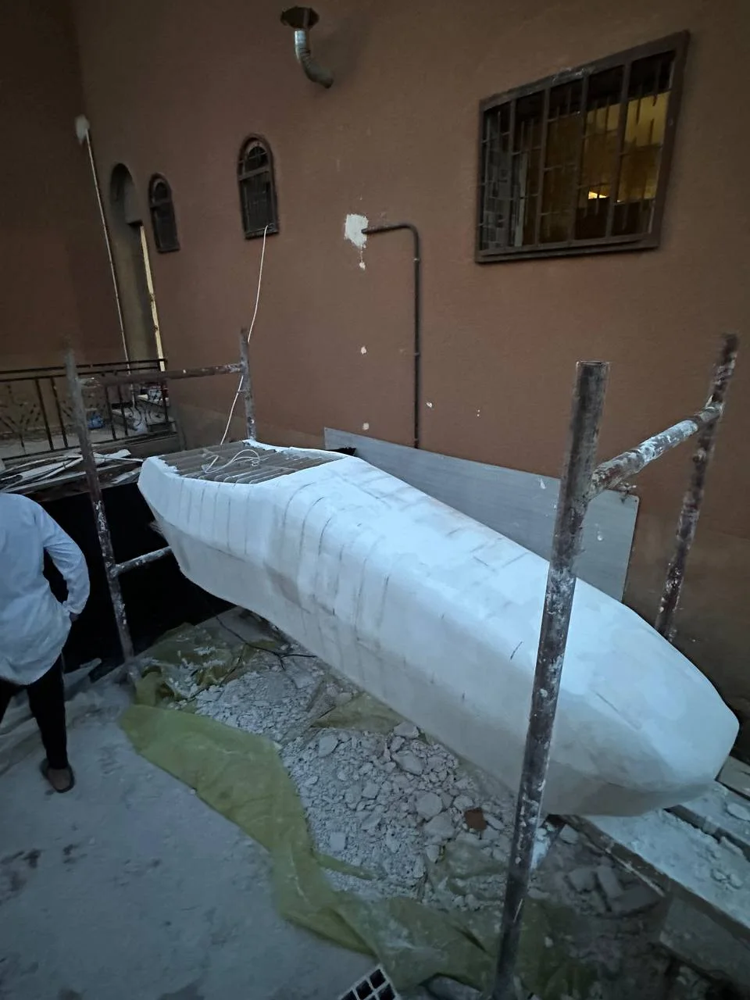
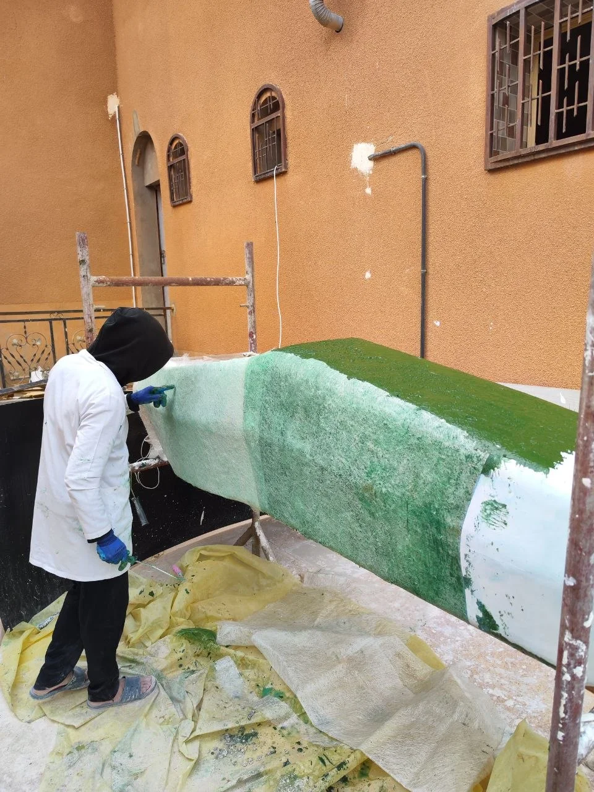

The body was only real when we could make it.
Complex surface geometry had to become a manufacturable object with the workshop tools available. The turning point was a custom wooden buck: transverse sections carried the shape, longitudinal splines connected them, and a three-part layout made laser cutting and assembly practical.
Chassis first. Surface architecture around it.
The SolidWorks bodywork began on the existing chassis. Its exterior had to reconcile three requirements that pull in different directions: aerodynamic intent, a coherent vehicle form, and manufacturability.
Surface modelling provided the freedom to develop changing curvature and transitions over the vehicle architecture. The body was not treated as an isolated styling skin: every surface had to sit over the chassis and ultimately be reproducible as a physical tool.

Evidence boundary. No native SolidWorks bodywork files or section-plane screenshots were included with this page request. The vehicle render is authentic project imagery; the diagrams below explain the manufacturing principle and are explicitly illustrative, not reconstructed CAD geometry.

A manufacturing problem needed an engineered answer.
“One of the boldest engineering decisions I’ve made.”
I independently conceived the sectional wooden buck as a way to reproduce the digital bodywork with the equipment and resources available.
I worked out how to decompose the surface into transverse profiles, connect those profiles with longitudinal splines, split the structure into manufacturable assemblies and prepare it for laser cutting. The idea carried a real risk: if the sections, references or assembly logic were wrong, the full structure could fail to represent the intended form.
The complete buck fitted on its first assembly—without corrective modifications.
My ownership was the concept and engineering strategy. This is not a claim that I personally performed every workshop operation.Sections set the shape. Splines carry it between them.
The buck converted a continuous three-dimensional surface into a framework that could be cut, handled and assembled.
Transverse planes were positioned along the CAD body to define local profiles. Those profiles became the principal cross-sectional references. Longitudinal splines connected them along the body contours, maintaining continuity and guiding later surface shaping.
The source CAD plane orientation and station locations were not supplied, so the sketch deliberately avoids assigning an X/Y/Z convention or dimensions.
Design to the machine you have.
The complete buck exceeded the working dimensions of the available laser cutter. Rather than compromise the overall form, I divided the structure into three manufacturable assemblies and planned to join them after cutting.
The transverse profiles and splines were prepared as PDF drawings for the laser-cutting workflow. The profile geometry defined the cross-sections; the longitudinal members tied the modules into a continuous framework.
No source PDF cutting templates, native CAD files, bed dimensions or tolerances were supplied. The three-part diagram is therefore schematic; it does not imply module lengths or cut settings.
SolidWorks model → profile extraction → PDF preparation → laser-cut parts → three-part assembly.

The digital decomposition held together.
The cut profiles and longitudinal references were brought together into the full framework. On the first complete assembly, the sections and connecting members fitted as intended. No corrective modifications were required.
First fit.
No rework.
This is the proof point at the centre of the story: the sectional-buck concept did not remain a CAD proposal. Its geometry and assembly strategy translated into a physical structure.
Return to the original decisionA lightweight volume, shaped against engineered references.
The open framework established the principal geometry; the spaces between sections still needed a continuous surface.
Foam was placed between the wooden profiles to fill those gaps. It was deliberately left below the target external contour so plaster could be added and shaped manually. The wooden sections acted as checkpoints; the splines gave a continuous guide between them.
Material roles are shown in section; no allowance thickness or component dimensions are implied.

Capture the positive form, then build the tool.
Once the positive plug was shaped and surface-prepared, glass fibre was laid over it to create the female mould.
The documented layup has four layers: one 100 g/m² layer for conformance, followed by three 300 g/m² reinforcement layers. No resin chemistry, fibre orientation, vacuum process or curing conditions are claimed here.

Two mould sections. Mounting points along the split.
The female mould was divided into two sections, with mounting points along the separation line where the halves meet.
The exact split orientation is not assigned from the photographs. This diagram communicates the two-part principle only.

From tooling to the car.
The female mould became the route to the final glass-fibre bodywork, which was finished and integrated onto the Formula Student vehicle.
This closes the manufacturing chain documented here: digital surface → sectional buck → positive plug → female mould → composite bodywork → vehicle integration. The supplied event photograph shows the finished shell displayed separately, rather than an on-car installation.

I did not just design a Formula Student body. I developed a route to bring that design into reality.
Continue to aerodynamic analysisOne geometry. A chain of engineering decisions.
surface 02Section
extraction 03PDF &
laser cutting 04Wooden
buck 05Foam +
positive plug 06Female
mould 07Composite
bodywork
Process sequence and materials stated from the project record; geometry, dimensions and manufacturing settings not supplied are intentionally omitted.